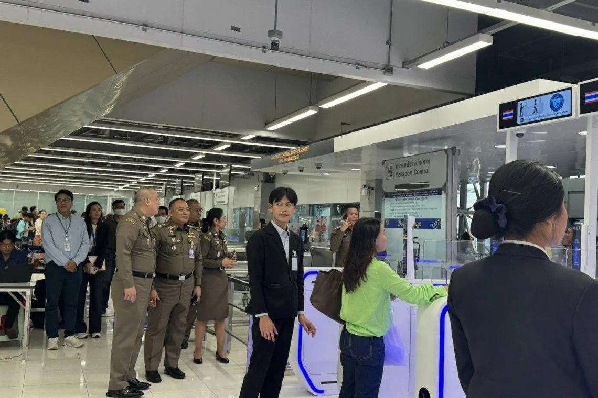

This covers Non-Immigrant visas (Non-O, Non-B, Non-ED, Non-OA and similar), the DTV, tourist visas (TR, SETV, METV) and other long-stay statuses. The arrival gates are set up for visa-exempt entry only, and the gate asks the traveller to confirm entry under the 30-day visa exemption. Confirming on a visa-based entry can change the record to a visa-exempt entry. Visa holders use a staffed counter.
What This Rule Covers
Thailand operates automated e-gates at Suvarnabhumi Airport (BKK) for foreign travellers with biometric e-passports. Arrival gates are restricted by visa status, nationality and travel history. Departure gates are open to all foreign biometric e-passports at Suvarnabhumi.
Suvarnabhumi handles about 70,000 international arrivals a day. Officials expect roughly 50 to 53 percent of arrivals to use the gates once the system is fully live.

Who It Applies To
Can Use the Arrival Gate: All Four Requirements
| # | Requirement | Detail |
|---|---|---|
| 1 | Passport from one of 33 listed countries or territories | Biometric e-passport. List below. |
| 2 | Entering visa-exempt (30-day exemption) | No visa of any kind. |
| 3 | Entered Thailand before on the same passport | Fingerprints and face must already be in the Immigration database. |
| 4 | TDAC submitted before arrival | Free, official site only, within 3 days before arrival. |
Cannot Use the Arrival Gate: Staffed Counter Required
| Traveller | Reason |
|---|---|
| Any visa holder: Non-Immigrant (Non-O, Non-B, Non-ED, Non-OA), DTV, tourist visa and other long-stay holders | Arrival gates are for visa-exempt entry only. |
| First-time visitors | Biometrics must be collected at a counter first. |
| New passport with no prior Thai entry on it | No linked history. May be sent to a counter. |
| Passports not on the 33 list, including United States, China, Taiwan, India and Russia | Not included in the expansion. |
| Anyone an officer redirects | Immigration can divert any traveller to a counter. |
The 33 Eligible Passports
Singapore and Hong Kong were eligible before the expansion.
| Region | Countries and territories |
|---|---|
| Asia (5) | Hong Kong, Japan, Malaysia, Singapore, South Korea |
| Europe (24) | Austria, Belgium, Czech Republic, Denmark, Finland, France, Germany, Greece, Hungary, Ireland, Italy, Latvia, Luxembourg, Malta, Netherlands, Norway, Poland, Portugal, Slovakia, Slovenia, Spain, Sweden, Switzerland, United Kingdom |
| Oceania (2) | Australia, New Zealand |
| North America (1) | Canada |
| Middle East (1) | United Arab Emirates |
Not on the list: United States, China, Taiwan, India, Russia.
Airports and Current Status
Only Suvarnabhumi arrivals are confirmed for the 33-country expansion. Sources disagree on the other airports, and those entries are unconfirmed.
| Airport | Arrival gates for foreigners | Departure gates for foreigners |
|---|---|---|
| Suvarnabhumi (BKK) | Live for the 33 passports from about 20 to 21 September 2026, phased rollout | Open to all nationalities with a biometric e-passport since 15 December 2023 |
| Don Mueang (DMK) | No confirmation of the expansion in official material. Use the counters. | Runs 24 hours. E-passport with 6+ months validity, minimum height 120 cm |
| Chiang Mai (CNX), Phuket (HKT), Hat Yai (HDY) | Conflicting reports. Unconfirmed. | Reported available. Confirm on site. |
Full operation depends on equipment, security systems and biometric data readiness. Returning visitors are likely to get access first.
Step by Step Process
- Submit the TDAC on the official site within 3 days before arrival. See the Thailand Digital Arrival Card guide.
- Confirm the passport is a biometric e-passport from a listed country, and that it has a prior Thai entry on it.
- At the arrival hall, use the e-gate lane only if entering visa-exempt. Visa holders go to a staffed counter.
- Scan the passport and complete the face match.
- Confirm entry under the 30-day visa exemption when the gate asks.
Average processing is 24 to 30 seconds per person when there are no security flags.
TDAC Remains Mandatory
The TDAC is free and available only on the official site: tdac.immigration.go.th. Passport details must match exactly. A TDAC error can remove the traveller from the gate lane.
No Passport Stamp
Gate entries and exits are recorded electronically with no ink stamp. A counter is required when a stamp is needed for an extension, an employer, insurance or other paperwork.
The entry stamp photo upload on the online TM30 form is reportedly not a mandatory field, and Immigration holds the entry record. See TM30 registration for the current process.
Officer Discretion
The gate checks documents and biometrics and cannot assess behaviour. Immigration officers can send any traveller to a counter.
Permitted Stay
The gate does not change the permitted stay. Visa-exempt stay is 30 days for 60 countries and territories from 15 September 2026. See Visa Exempt Returns to 30 Days.
New Passport
A new passport goes to the counter on its first Thai entry. At Don Mueang, official departure guidance suggests waiting at least 14 days after a new passport is issued before using the gate.
Departure Gates
Departure gates are broader than arrival gates. Suvarnabhumi departure gates have accepted all foreign biometric e-passports regardless of visa type since 15 December 2023. The visa and nationality restrictions apply to arrivals only.
Chiang Mai Specific Notes
Most foreign residents of Chiang Mai hold a Non-Immigrant visa, a DTV or an extension of stay, and use the staffed counter on every arrival. Chiang Mai Airport (CNX) arrival gate status is unconfirmed. Travellers connecting to Chiang Mai through Suvarnabhumi are processed at the Suvarnabhumi arrival hall under the rules above.
Residents who rely on entry stamps for 90-day reporting, extensions or employer records use a counter. See 90-day reporting.
Penalties for Non-Compliance
No penalty for using the wrong lane is published in the sources reviewed. The recorded risk is that confirming visa-exempt entry on a visa-based arrival can change the entry record to a visa-exempt entry. Travellers with any doubt about their status use a staffed counter. Requirements may vary by immigration office.
Rollout Timeline
| Date | Event |
|---|---|
| 15 December 2023 | Suvarnabhumi departure gates open to all foreign biometric passports |
| 15 September 2026 | Visa-exempt stay set at 30 days for 60 countries and territories |
| About 20 to 21 September 2026 | Arrival gates start accepting the 33 nationalities at Suvarnabhumi |
Related Visa Categories
- Visa Exempt Returns to 30 Days: the entry category the arrival gates serve.
- DTV Visa: visa holders use the staffed counter.
- ED Visa: visa holders use the staffed counter.
Airport signs and Immigration staff instructions take priority over any online list. Sources: Thai Government announcement, 17 August 2026; Government PR Department update, 26 August 2026; official TDAC guide.
Disclaimer
CMLocals is an independent information resource. This page reflects current rules and reporting cross-checked against multiple outlets. We are not a law firm and this is not legal advice. Officer discretion and enforcement practice can vary. Verify with official Thai government sources before making travel decisions.
Last verified: September 2026